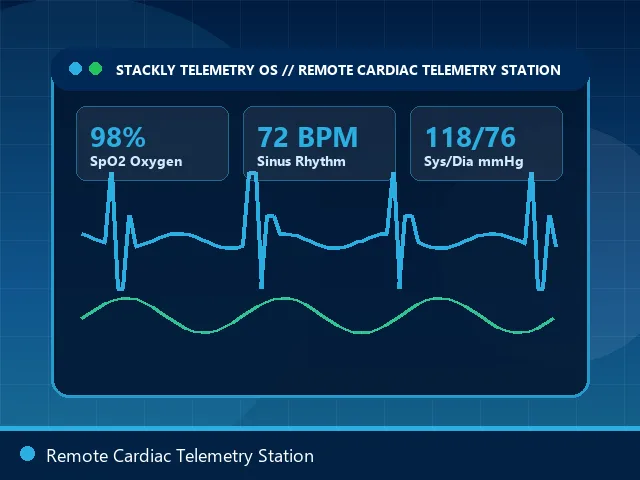
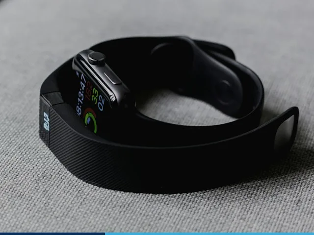
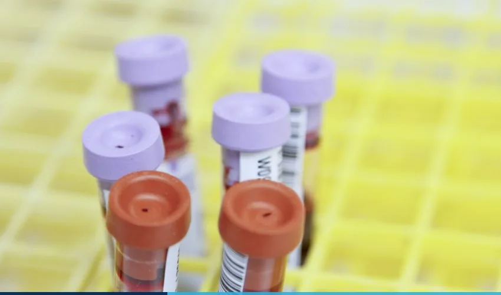
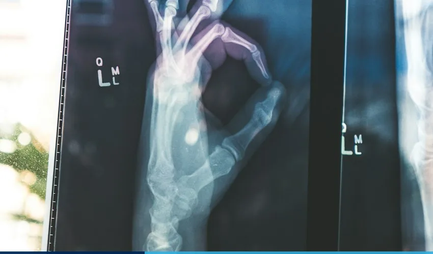

Explore Our Virtual Care Ecosystem
Filter by clinical category or click any image card to open a high-resolution lightbox inspection.


Raw Patient Upload vs. AI-Enhanced Clinical View
Drag the slider below to see how our clinical computer-vision engine highlights vascular and tissue anomalies for your consultant.


Engineered for Clinical-Grade Visual & Audio Fidelity
Why a Stackly Telemedicine consultation looks and sounds dramatically clearer than standard consumer video calls.
Sony 4K 60fps Optics
True-color CRI 98+ lighting ensures accurate assessment of skin pallor, jaundice, and rashes.
20Hz–2kHz Stethoscope
Lossless acoustic audio channel dedicated to heart murmur and lung auscultation streaming.
Dual-Fiber Redundancy
10Gbps dedicated NHS HSCN & private fiber lines with sub-14ms UK latency.
-45dB Acoustic Isolation
Soundproofed clinical booths guaranteeing total patient confidentiality.
What's Inside the Stackly Home Telemetry Kit?
Every device arrives pre-paired to your secure account—simply press one button to stream live readings to your doctor.
Works Across Every Device You Own
Zero downloads required for browser consultations, or use our native iOS, Android, and Smart TV apps.
iOS & iPadOS App
Full Apple HealthKit & Apple Watch ECG integration.
Android & WearOS
Seamless Google Health Connect & Bluetooth sensor pairing.
WebRTC Browser
One-click instant launch on Chrome, Safari, Edge, and Firefox.
Living Room TV
Large-screen accessibility mode for seniors and family calls.
3,840p
Ultra-HD 4K Video Stream
14 ms
Average UK Stream Latency
18,500+
Home Vitals Kits Active
256-Bit
End-to-End AES Encryption
How We Protect Your Clinical Photos & Scans
EXIF Metadata Stripping
All uploaded skin or diagnostic photos automatically strip GPS location and device metadata upon upload.
Zero Third-Party Sharing
Your clinical images are accessible strictly to your named GMC consultant and are never used to train external public AI.
Patient-Controlled Vault
Export or permanently purge your uploaded media at any time from your encrypted patient dashboard.
Questions About Our Kits & Virtual Pods
What internet speed do I need for a 4K telemedicine video call?
Can I order a Home Telemetry Kit before booking an appointment?
Request a Home Vitals Kit or Virtual Appointment
Complete the form to reserve a 4K video consultation or request next-day UK courier dispatch of our connected home diagnostic kit.
Equipment Dispatch Hub
221B Harley Street, Marylebone, London W1G 9QT, United Kingdom
24/7 Device Support
Telemetry Desk
Telemetry Kit & Consult Order Form
All fields are required. Name accepts alphabets only; Phone accepts numbers only; Past dates are restricted.